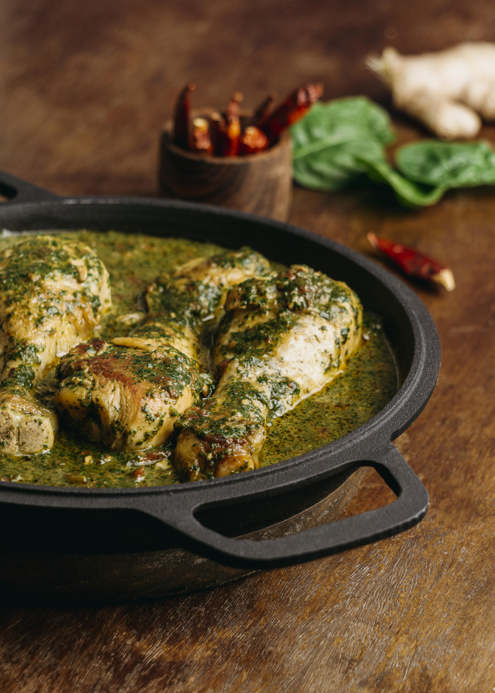
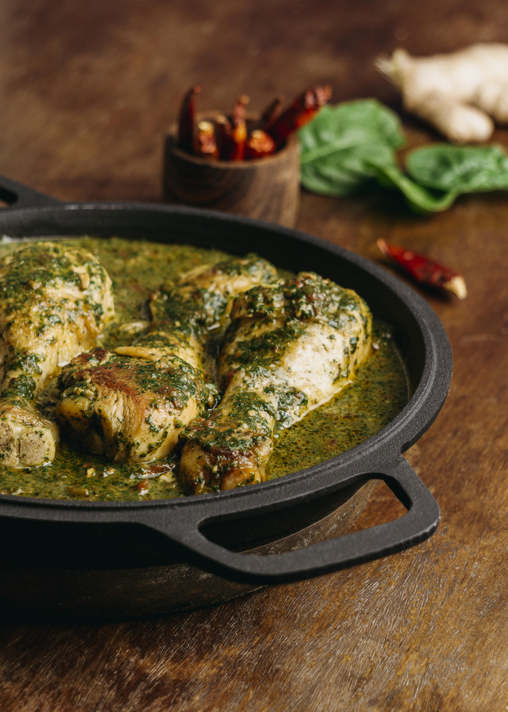

🍲 Chicken Karahi (Pakistan)
🍗🔥 Chicken Karahi (Pakistan) is one of the most iconic and loved dishes in Pakistani
cuisine.
 
Prep Time: 15 minutes
🕒 Cook Time: 30-35 minutes
👩🍳 Serves: 4 people

Prep Time: 15 minutes
🕒 Cook Time: 30-35 minutes
👩🍳 Serves: 4 people
🛒 Ingredients
For the Chicken:
- 1 kg chicken (cut into medium pieces, with bone)
- ½ cup cooking oil or ghee
- 1 tbsp ginger-garlic paste
- 4-5 medium ripe tomatoes (chopped or blended)
- 3-4 green chilies (whole or slit)
- 1 tsp red chili powder (adjust to taste)
- 1 tsp paprika (optional, for color)
- 1 tsp cumin powder
- 1 tsp coriander powder
- ½ tsp turmeric powder
- ½ tsp garam masala
- Salt to taste
- Fresh coriander leaves (chopped, handful)
- Fresh ginger (cut into thin julienne strips, for garnish)
👩🍳 Instructions
- Heat Oil:
-
In a karahi (or wok), heat oil/ghee. Add chicken and fry until it changes color slightly.
- Add Spices & Ginger-Garlic:
-
Add ginger-garlic paste and fry for 2-3 minutes. Then add red chili powder, turmeric,
cumin, and coriander powder.
- Cook Tomatoes:
-
Add chopped/blended tomatoes and salt. Cook on medium heat until tomatoes break down and
oil separates (masala thickens).
- Add Green Chilies:
-
Toss in whole/slit green chilies. Stir well.
- Simmer:
-
Cover and cook on low heat until chicken is fully tender (about 15-20 minutes).
- Finish:
-
Sprinkle garam masala, add fresh coriander, and garnish with ginger strips.
- Serve Hot:
-
Enjoy with naan, roti, or steamed basmati rice.